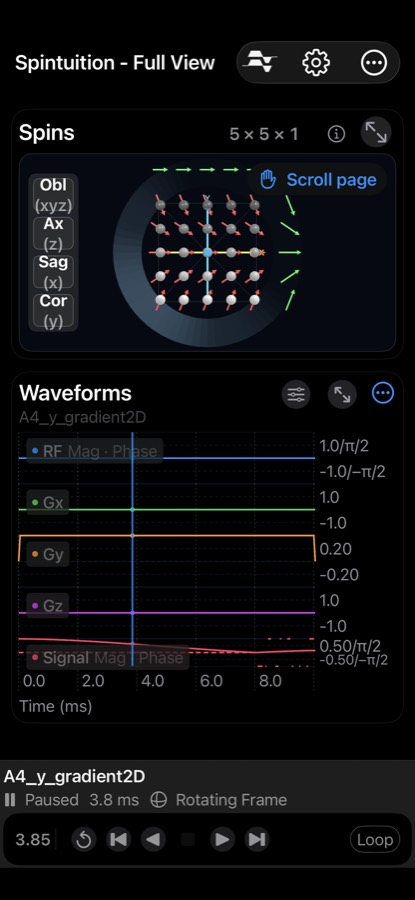

Spintuition
Spintuition Sequence Panel
Sequence Panel
In the Full View, the Waveforms panel shows the pulse sequence over time beneath the spins, with playback controls at the bottom.
You can play a loaded sequence, scrub through it, or record your own waveforms live using the Waveform Controls sliders. Use the expand button (↗) to view the waveforms full screen.

Waveforms
| Trace | Color | Units |
|---|---|---|
| RF | Blue | Magnitude (kHz) and phase (rad) |
| Gx | Green | kHz/m |
| Gy | Orange | kHz/m |
| Gz | Purple | kHz/m |
| Signal | Pink | Complex average transverse magnetization of all spins (enable in Settings) |
Scrubbing: drag the vertical time marker to move through the sequence; the spins update to match.
Playback controls
| Control | Action |
|---|---|
| Share Waveforms | Export a Pulseq .seq file, or save to My Sequences. |
| Back to Start | Return to time 0 without erasing waveforms. |
| Play Backward / Forward | Play through the sequence in either direction. |
| Step Backward / Forward | Play a short interval (0.5 ms default step size). |
| Stop | Pause playback. |
| Restart | Clear all waveforms and reset to time 0. |
| Loop | Repeat playback continuously. |
| Speed / Step Size | Adjust playback speed and step size (expanded views). |
Sequences may also include pause points (SimmrPause), where playback stops until you
press play — used for example in the 5×5 encoding sequence.
Waveform controls
Open with the slider icon on the Waveforms panel. RF and Δf are in kHz, gradients in kHz/m and relaxation in ms.
| Control | Description |
|---|---|
| B1x | RF excitation field strength (kHz). |
| Δf | Off-resonance frequency (kHz). |
| Gx, Gy, Gz | Gradient strengths (kHz/m). |
| T1 | Longitudinal relaxation, 1–200 ms (log scale). |
| T2 | Transverse relaxation, 1–50 ms (log scale). |
| Replace Waveforms | On: playing forward or moving sliders records new waveform frames. Off: sliders affect only the live simulation, and playback uses the recorded waveforms. Turned off automatically when a sequence is loaded. |
| Lab Frame | Off: rotating frame (default). On: laboratory frame with carrier precession. |
| Show B1 | Show the RF rotation-axis vector while RF is non-zero. |
Recording your own sequence
- Turn Replace Waveforms on and press Play Forward.
- Move the B1x and gradient sliders while it plays — the timeline grows as you record (up to the maximum time in Settings).
- Press Back to Start, turn Replace Waveforms off, and play it back.
- Use Share Waveforms to save it to My Sequences or export a Pulseq file.